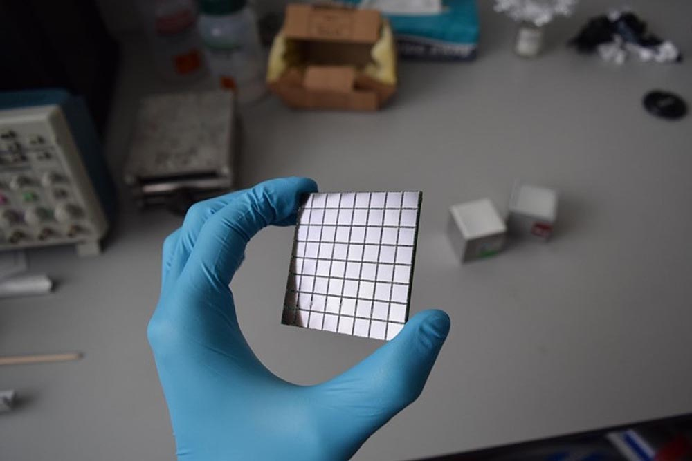
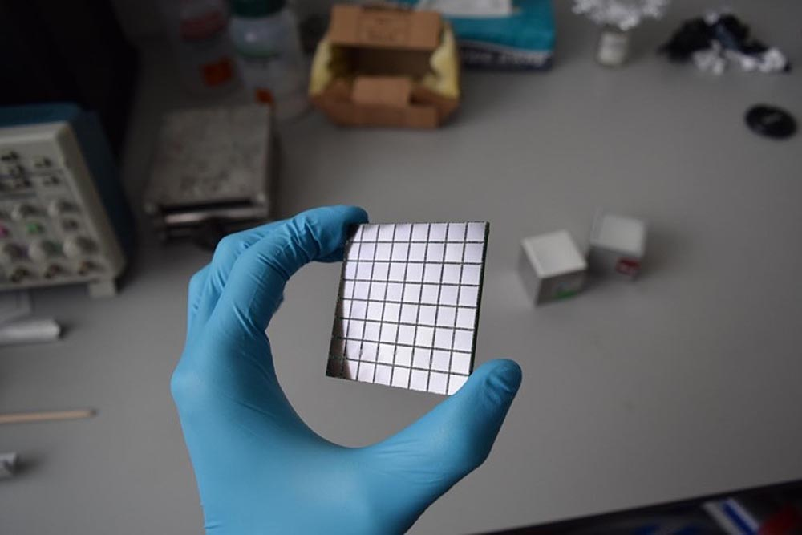

Before designing and producing the scintillation array, I have performed detailed simulations of the gamma-ray detection efficiency of stand-alone scintillation detectors and detectors arranged into arrays using the Geant4 Monte
Carlo simulation toolkit (in C++ programming language).

This part of the project includes the reduction of the detector support weight based on finite element stress analysis.
I characterised the scintillation array separately from the active target. A preparation for energy and efficiency calibration is shown in the photo below.
More advanced and systematic simulations of the electric field in the TPC field cage I have made with COMSOL Multiphysics using geometries created in CAD software.
To define the final shape of the gas chamber, I simulated stress distribution in the chamber under vacuum and overpressure conditions. These simulations were also performed in COMSOL with geometry inputs from Autodesk Inventor.
I refined the design of the gas chamber based on the FEA simulation outputs. Based on my design, the gas chamber of the detector was produced by an external company.
To operate the detector in an environment with a reduced amount of dust, I upgraded the cleanroom of the laboratory to Class 100 (ISO 5). The assembling of the gaseous detector in the cleanroom is shown below.
Also, I designed and built a gas supply system for the active target.
Integrating all the built systems and detectors, I assembled the SpecMAT active target and characterised it with a measurement of decay products of 241Am. The assembled detector and the first alpha-particle track are shown
below. The correlation of alpha-particle tracks with detected gamma-rays in the scintillation array is described in my thesis.
ACTAR-Demonstrator became an incredible learning platform where our research group and I gained experience in integrating DSSSD detectors into an active target. With the new knowledge, we produced more advanced MK2 Silicon arrays for
ACTAR.